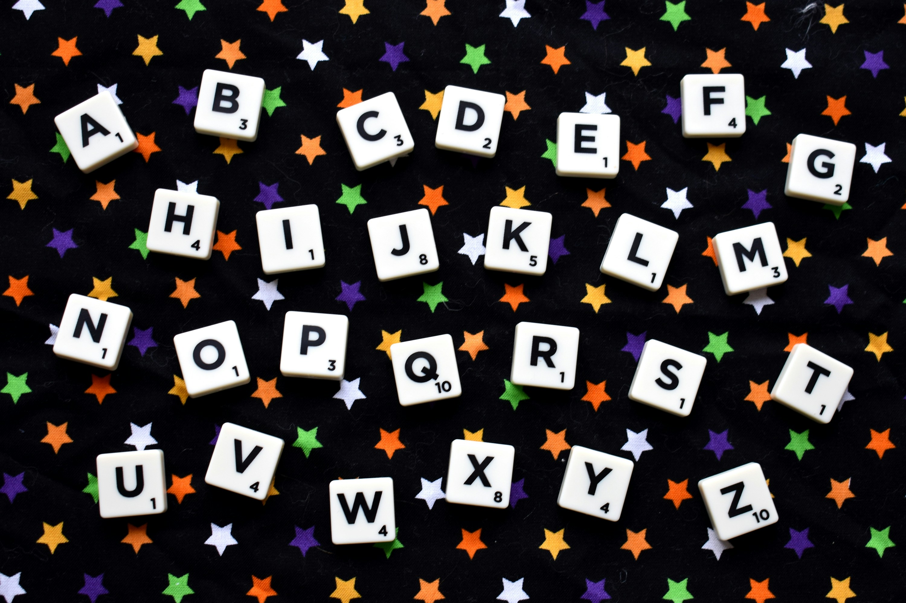

~$ <Hola, soy Tatiana Casas/>
Apasionada desarrolladora Full Stack con formación en administración de empresas. Me gusta transformar ideas en soluciones digitales que realmente marcan la diferencia. Combino creatividad, lógica y disciplina para diseñar y construir productos tecnológicos que conectan con las personas y resuelven problemas reales. Más que código, creo experiencias que inspiran y generan valor, siempre aprendiendo y creciendo en este apasionante mundo del desarrollo.
¡Conversemos!~$ Algunos de mis proyectos más destacados
En estos proyectos he trabajado tanto en frontend como en backend, aplicando mis habilidades como desarrolladora Full Stack para crear soluciones completas y eficientes.
Journey: E-commerce para niños con TEA

Concepto de tienda online adaptada para niños con TEA, con navegación intuitiva.
Rol: Frontend y Backend - UX/UI, maquetación, arquitectura y experiencia de usuario.
Estrategia basada en datos: Alianza Comercial
Evaluación de proveedores y creación de alianzas estratégicas mediante análisis de datos para optimizar la captación de clientes.
Rol: Backend y Frontend - Gestión comercial, análisis de datos y automatización.
Calculadora Avanzada

Proyecto en desarrollo de una calculadora web para operaciones matemáticas complejas y conversiones de unidades con interfaz intuitiva.
Rol: Desarrollo frontend y lógica de cálculo.
Abecedario Interactivo
Aplicación web interactiva para niños para aprender el abecedario al hacer clic en cada letra.
Rol: Desarrollo frontend completo con JavaScript.
~$ Acerca de mí
Soy desarrolladora Full Stack con sólidos conocimientos en frontend (HTML, CSS, JavaScript, React) y backend (Java, Spring, bases de datos). Mi enfoque está en construir aplicaciones robustas, escalables y con excelente experiencia de usuario.
Mis habilidades incluyen diseño de arquitecturas, integración de APIs, desarrollo de interfaces responsivas y optimización del rendimiento. Me apasiona aprender y aplicar nuevas tecnologías para resolver problemas reales.
¿Buscas una desarrolladora? ¡Hablemos!
~$ Contacto
¿Tienes un proyecto o idea? Estoy lista para ayudarte a hacerlo realidad. ¡Conversemos y construyamos juntos!
Escríbeme un correo Descargar CV